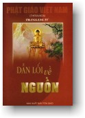

|
BuddhaSasana Home Page |
Vietnamese, with Unicode Times font |
|  |
DẪN LỐI VỀ NGUỒN
Trà Giang Tử Tăng
Quang Tự, Huế |
|
[02] TRÊN ĐƯỜNG HOẰNG PHÁP CỦA PHẬT TỔ GOTAMASAU KHI ĐỘ HAI THƯƠNG GIA ĐỨC PHẬT ĐỘ AI NỮA? Rời rừng cây URUVELA, đức Phật đi về hướng Tây Bắc. Đến vườn Lộc giả để tìm năm thầy KIỀU TRẦN NHƯ là những người cùng tu KHỔ HẠNH với Ngài. ĐẮC ĐẠO RỒI, SAO PHẬT CHƯA VỀ ĐỘ PHỤ HO ÀNG?Nhận thấy nhân duyên của Vua Cha chưa đến, mặc dù khi thành Đạo rồi, đức Phật cũng đã nhớ đến Phụ hoàng. Ngài cũng đã quán thấy hai vị đạo sĩ ALARA và UDDAKA cũng vừa từ trần cách đây mấy bữa. TRÊN ĐƯỜNG VỀ VƯỜN LỘC GIẢ CÓ ĐIỀU CHI XẢY RA? Quãng đường dài từ BỒ ĐỀ ĐẠO TRÀNG đến thành GÀYA xa hơn mười cây số. Đức Phật gặp thầy Bà La Môn UPAKA. Gặp đức THẾ TÔN, Ông này có hỏi thăm về đạo quả của Ngài. Nhưng vì không có duyên lành, nên ông không THỌ GIÁO được. ĐẾN LỘC GIẢ, THÁI ĐỘ CỦA NĂM THẦY RA SAO? Năm thầy KIỀU TRẦN NHƯ không muốn tiếp đức Phật vì họ không còn tin tưởng nơi Ngài. Nhưng đến khi đối diện, trước vẻ đẹp phương phi, tướng hảo quang minh nhất là hào quang sáu màu rực rỡ của đấng Toàn Giác bao trùm lấy họ, khiến các thầy bồi hồi cảm xúc. Và không ai bảo ai, họ cùng nhau đưa tay rước bát, trải toạ cụ, và cùng nhau khấu đầu đảnh lễ, cung kính cầu xin giảng dạy. LẦN ĐẦU TIÊN MỞ ĐẠO NÀY GỌI LÀ CHI? Đức Phật Tổ GOTAMA CHUYỂN PHÁP LUÂN v ào ngày trăng tròn tháng Sáu năm Dậu. Danh từ "CHUYỂN PHÁP LUÂN" được dùng để khai nền GIÁO PHÁP đạo đức.Đặt nền tảng của ĐẠO, Ng ài dạy hai cực đoan người tu cần xa lánh là.Quá KHỔ HẠNH ép xác Tiếp theo, Ngài dạy TỨ DIỆU ĐẾ (phần PHÁP BẢO sẻ giải rõ). Nhận thấy lời dạy của đức Phật rất phi thường, là đuốc TUỆ, để soi sáng cho thế gian. Năm thầy cầu xin THỌ GIÁO làm để tử Phật. Đức THẾ TÔN bằng lòng nhận họ vào hàng THANH VĂN đầu tiên trong Giáo Đoàn Tăng lữ. CÁC VỊ ÂÝ CÓ CHỨNG QUẢ KHÔNG? Sau khi nghe xong thời Pháp, Tuệ nhãn phát sanh cõi lòng thanh tịnh, thấy rõ chơn lý nhiệm màu, Ông KONDANNA "TRẦN KIỀU NHƯ" chứng quả vị A LA HÁN. Bốn vị kia, đức Phật thuyết ba lần TỨ DIỆU ĐẾ, cũng chứng quả luôn. SAU NĂM ÔNG KIỀU TRẦN NHƯ, ĐỨC PHẬT CÒN ĐỘ AI? Từ đó về sau, từ thành này sang xứ nọ, trọn 45 năm HOẰNG PHÁP LỢI SANH, đức Phật chu du hoá độ khắp nơi. Giáo Pháp của Ngài theo gót chân Tăng lữ mà bố rải lan truyền cùng khắp các Quốc Độ gần xa... VUA TINH PHẠN NGHE TIN CON NGÀI THÀNH PHẬT CHƯA Thành danh của đấng ĐẠI GIÁC NGỘ lừng lẫy tại xứ MA KIỆT GIÀ, vang đến thành CA TỲ LA VỀ. Vua cha nóng lòng trông đợi không thấy đức Phật về. Ngài bèn cho quan đại thần sang tận VƯƠNG XÁ thành, thỉnh Phật. Từ ông UDÀYI, con quan lễ bộ thượng thư, cũng là bạn thân của Thái tử. Cho đến chín lần, chín vị đại thần đến VƯƠNG XÁ thỉnh Phật. Đến nơi, họ vào hầu Phật nghe lời giáo huấn của Ngài, đều xin tình nguyện xuất gia theo Phật, mà quên cả sứ mạng của mình. Một ngày nọ, nhân trực nhớ đến nhiệm vụ của mình. Đại đức UDÀYI vào hầu thỉnh Phật về CA TỲ LA VỆ để độ phụ hoàng kẻo vua cha mỏi lòng mong đợi. VUA CHA CÓ VUI LÒNG ĐÓN PHẬT KHÔNG? Tin đức Phật trở lại hoàng cung, quân dân thảy đều vui mừng sung sướng, vì họ sẽ được chào đón đấng SIÊU NHÂN mà bấy lâu họ hằng mong nhớ. Riêng TỊNH PHẠN VƯƠNG ban truyền cho tổ chức thật linh đình, rầm rộ, trang hoàng thật rực rỡ để đón Phật. Khi nghe tin "ĐỨC PHẬT ĐÃ ĐẾN NƠI" vua cha lật đật lên thành xem. Vua thấy từ xa đàng xa, dẫn đầu là đức Phật với chiếc Y Vàng thanh đạm, Bình Bát trên tay đang vào từng nhà hóa trai, khất thực. Theo sau Ngài, một dãy dài Tăng lữ...Vua cha rất chi thất vọng, buồn tủi vì Vua nghĩ. Một vị hoàng tử giàu sang tuyệt đỉnh, là chúa cả trăm họ mà giờ phải đi khất thực từng nhà, xin từ vá cơm, miếng bánh của kẻ thần dân, ôi còn gì tủi nhục cho bằng?... Tuy vậy, vua cha cũng gắng gượng ra đón Phật với cõi lòng xót xa chua chát... TRƯỚC SỰ KIỆN ẤY, ĐỨC PHẬT ĐỐI XỬ RA SAO? Dùng lời đạo lý cao thâm vi diệu để tiếp độ Phụ hoàng. Trước điện lực từ ái bao la, hào quang sáu màu rực rỡ phát ra từ kim thân của đấng TOÀN GIÁC và lời Pháp âm vi diệu tha thiết, êm đềm, khiến cho cõi lòng đức vua TỊNH PHẠN bồi hồi cảm xúc, vô cùng sung sướng. Sau khi dứt thời Pháp, đức TỊNH PHẠN VƯƠNG đắc quả TU ĐÀ HOÀN. Tiếp theo, các hàng thân quyến trong hoàng cung vương tôn, công tử đều xin thọ trì quy giới kẻ xuất gia tu sĩ, người làm tại gia cư sĩ rất đông. ĐỨC PHẬT CÓ TẾ ĐỘ CÔNG CHÚA GIA DU ĐÀ LA KHÔNG? Quá tủi phận mình, Công chúa GIA DU ĐÀ LA vật mình than khóc. Đức vua TỊNH PHẠN nhắc khéo với đức Phật, xin Ngài ngự đến nơi thuyết pháp cho công chúa nghe, và luôn dịp đó, đức Phật độ cho Hoàng tử LA HẦU LA lên bảy tuổi xuất gia theo hàng tăng lữ. (Muốn biết rõ hơn về LỊCH SỬ của đấng TOÀN GIÁC xin tìm xem nơi quyển "ĐẤNG TỪ PHỤ" của Đại đức PHÁP SIÊU hay tác phẩm "ÁNH ĐẠO VÀNG" của học giả VÕ ĐÌNH CƯỜNG đã xuất bản) ĐẠO PHẬT ĐEM LẠI ẢNH HƯỞNG G Ì CHO DÒNG HỌ SAKYA?Dòng SAKYA, Hán âm THÍCH CA MÂU NI toàn là võ tướng vô địch. Khi hấp thụ được giáo lý đức Phật rồi, đều trở nên hiền từ đạo đức. Họ thà chịu chết chứ không dùng bạo lực để tránh sự gây ra ác nghiệp. NẾP SỐNG VÀ THÌ GIỜ HÀNH ĐẠO CỦA ĐỨC PHẬT RA SAO? Là một vị GIÁO CHỦ tích cực hoạt động, đức THẾ TÔN chia một ngày ra làm năm thời. 1) Buổi sáng, đi Trì Bình khất
thực VÌ SAO ĐỨC PHẬT DẠY ĐẠO CHO CHƯ THIÊN LÚC ĐÊM? Đợi cho cuộc sống của c õi trần gian ô trược chìm lặng trong sự tĩnh mịch của đêm thâu, chư Thiên lúc bấy giờ mới xuống hầu Phật nghe Pháp hoặc hỏi những điều nghi hoặc.TRONG CUỘC HOẰNG PHÁP, NGÀI CÓ GẶP TRỞ NGẠI GÌ KHÔNG? Xứ ẤN ĐỘ thời bấy giờ, có 62 học thuyết của ngoại Đạo Tà Giáo. Song trong thời gian 45 năm HOẰNG PHÁP LỢI SANH. Ánh sáng Đạo Vàng đến đâu, thì nguồn Chơn lý tối thượng đã bẻ gãy tất cả những tà thuyết vu vơ huyễn mộng. Gót chân đấng THIÊN NHƠN SƯ và hàng Tăng lữ đến đâu ban rãi TÌNH THƯƠNG và sự AN VUI đến đó. Do nhờ oai lực tối thượng và bi mẫn của đấng TOÀN TRI, mà đức Phật đã cảm hoá ANGULIMÀLA, kẻ cướp sát nhân hung bạo bỏ dữ về lành. Đức ĐIỀU NGỰ cũng đã độ voi NALAGIRIM do vua A XÀ THẾ nghe theo lời xúi giục của ĐỀ BA ĐẠT ĐA, cho voi uống rượu say, xua ra tính hại Phật Cũng như do nhờ đức NHẪN NẠI, mà đấng TOÀN GIÁC đã cảm hoá Dạ xoa ALAVAKA bỏ Mê về Ngộ. Đức độ của đấng TO ÀN TRI vang dội khắp đó đây.(Muốn biết rõ hơn xin tìm xem quyển" LỊCH SỬ ĐỨC PHẬT GOTAMA" do pháp sư THÔNG KHAM đã xuất bản) Tuy vậy, trong đời Ngài vẫn còn bị thầy ĐỀ BÀ ĐẠT ĐA luôn luôn có tâm hãm hại. TẠI SAO ĐỀ BÀ ĐẠT ĐA CÓ TÂM OAN TRÁI VỚI PHẬT? Do nghiệp oan trái từ vô lượng kiếp trước đến nay. Cho đến kiếp chót của đấng TRỌN LÀNH. Thầy ĐỀ BÀ ĐẠT ĐA là con trai của vua THIỆN GIÁC, em ruột của công chúa GIA DU ĐÀ LA (tức em vợ Thái tử) mà vẫn luôn luôn có tâm ganh tỵ. Khi còn nhỏ, chính ông này đã bắn chim Phượng bị thương, Thái tử SĨ ĐẠT ĐA ra tay cứu vớt. Khi Phật THÀNH ĐẠO, các Hoàng thân đua nhau xuất gia theo Phật. Thầy ĐỀ BÀ ĐẠT ĐA cũng xuất gia. Tu hành tinh tấn, Ông đắc được LỤC THẦN THÔNG. Song vì tánh ngã mạng thái quá, nên ba lần Ông vào hầu Phật, xin cho Ông chưởng quản giáo đoàn tăng lữ...Đức Phật không chấp thuận, Ông bỏ đi tu riêng. Xúi vua A XÀ THẾ giết vua cha để lên ngôi vua. Còn Ông làm giáo chủ nhóm 500 đệ tử mới xuất gia. Sau đó, Đại đức XÁ LỢI PHẤT, đại đệ tử của đức Phật phải đi cảm hoá 500 thầy Tỳ khưu đó về với CHÁNH PHÁP. Vì quá tức giận, nên Ông hộc máu, và do tội lăn đá hại Phật tại chân núi KỲ XÀ QUẬT, khiến chân Phật bị chảy máu, mà Đất nứt rút nguyên hình Ông vào lòng địa ngục. NĂM CUỐI CÙNG, ĐỨC PHẬT ĐI VỀ ĐÂU? Tròn tám mươi tuổi thọ, qua bao ngày dãi nắng dầm mưa. Trải qua bao cơn sương gió xông pha, sau 45 năm HOẰNG DƯƠNG CHÁNH GIÁO khắp mọi nơi. Một ngày kia, đức THẾ TÔN cùng đoàn đệ tử vào thành VESALI. Khất thực xong, Ngài dẫn đoàn tăng lữ đến thành PAVA. Tạm trú nơi vườn xoài của ông CUNDA một đêm. Chủ vườn hay tin, lật đật đến vấn an đức Phật và xin thỉnh Ngài cùng chư Tăng về nhà ông THỌ THỰC ngày mai. Và cũng chính bữa THỌ THỰC này, đức Phật bị bệnh KIẾT LỴ. Song Ngài vẫn cố gắng dẫn đoàn Tăng lữ nhắm xứ KUSINARA trực chỉ trong cơn bệnh. TẠI SAO ĐỨC PHẬT VỀ KUSINARA GẤP THẾ? Chư Tăng có người bạch hỏi đức THẾ TÔN? Bạch hoá đức THẾ TÔN. Tại sao Ngài không ghé qua VƯƠNG XÁ THÀNH của vua BA TƯ NẶC là đệ tử thân tín của Ngài, mà cũng là một nước cường thịnh mà lại đến KUSINARA của đức vua MÀLA xa xôi mà lại yếu nghèo, nhỏ hẹp? Này các thầy Tỳ khưu Các thầy đừng có nghĩ như vậy. Thành KUSINARA này, ngày xưa, tiền kiếp của NHƯ LAI, là kinh đô của một nước phú cường và thịnh trị. Chính NHƯ LAI làm chúa tể nơi ấy. Vả lại, NHƯ LAI nhập NIẾT BÀN nơi ấy, thì sự phân chia XÁ LỢI sẽ được phổ cập đến các nước lân bang cả thảy. Dắt Tăng chúng đến rừng SÀLA, Vườn thượng Uyển của đức vua MÀLA, đức Phật kêu Đại đức A NAN ĐA trải Y TĂNG GIÀ LÊ trên tảng đá to, giữa hai cây SONG LONG THỌ, cành lá sum suê, tươi tốt cho Ngài ngự. Và cũng nơi đây, là nơi NHẬP VÔ LƯỢNG THỌ NIẾT BÀN của đấng THIÊN NHƠN SƯ. ĐỨC PHẬT NIẾT B ÀN VÀO THÁNG NĂM NÀO?Bữa thứ ba, vào ngày trăng tròn tháng VESAK (tháng tư âm lịch) năm Tỵ, khi sao Mai vừa mọc. Đấng ĐẠI GIÁC NGỘ đã NHẬP VÔ DƯ NIẾT BÀN giữa sự mến tiếc của Trời, Người trong TAM GIỚI. -ooOoo- PHÁP PHÁP LÀ GÌ? Phạn ngữ DHAMMA Hán dịch là PHÁP, có nghĩa là Nâng đỡ, nương nhờ, ví như cái RẬP, cái KHUÔN, cái LUẬT LỆ để theo đó mà làm. DHAMMA còn có nghĩa TỔNG TRÌ là những sự vật hiển nhiên, chính đáng. Nơi đây, nói về LỜI DẠY chính đáng của đức THẾ TÔN. VÌ NGUYÊN NHÂN NÀO ĐỨC PHẬT THUYẾT PHÁP? Sau đêm THÀNH ĐẠO, lúc ngự dưới gốc cây AJAPÀLA, trên bờ sông NI LIÊN, đức Phật ngồi Tham Thiền và những ý nghĩ sau đây phát sanh đến đấng ĐẠI GIÁC. - Quả thật là đau khổ. Vì không có một ai để ta lễ bái cúng dường và tỏ lòng cung kính. Hay ta tự tìm đến một vị Sa môn, hay Bà La Môn nào, để sùng bái tôn kính, hầu nâng cao giới đức, nâng cao tâm định, nâng cao trí tuệ và sự giải thoát đến chỗ TOÀN THIỆN chăng? Nhưng trên thế gian này, ta không thấy ai, dù là trong hàng chư Thiên, Ma vương, hay Phạm Thiên hay giữa chúng sanh như Sa môn, Bà La Môn, Trời, Người đều không có giới đức, tâm định, trí tuệ giải thoát hơn ta để ta thân cận, tôn kính và sùng bái. Rồi những tư tưởng sau đây lại phát sanh: Hay là ta hãy tôn kính và sùng bái chính GIÁO PHÁP mà ta đã chứng ngộ? Lúc ấy, Trời Phạm Thiên XÁ HAM BÁT TÍ hiểu được ý Phật. Nên từ cảnh giới Phạm Thiên xuất hiện đến trước đức THẾ TÔN, quỳ xuống, chấp tay đảnh lễ và bạch rằng. Quả như vậy. Bạch hoá đức THẾ TÔN. Những bậc ỨNG CÚNG CHÁNH ĐẲNG CHÁNH GIÁC trong quá khứ, đều Tôn kính và sùng bái chính giáo Pháp cao thượng này. Những bậc CHÁNH ĐẲNG CHÁNH GIÁC trong hiện tại, cũng Tôn kính và sùng bái chính giáo Pháp này. Vậy ai muốn tìm sự lợi ích cho mình và mong chờ sự trưởng thành của mình, chắc chắn phải tôn kính và sùng bái Giáo Pháp cao siêu này và giữ gìn nằm lòng lời khuyên dạy, kêu gọi của chư Phật. ĐỨC PHẬT CÓ CHẤP THUẬN KHÔNG? Ngài đi từ gốc cây RÀJADATANA đến cội cây AJAPÀLA. Lúc ngồi trầm tư, những tư tưởng phát sanh. GIÁO PHÁP mà NHƯ LAI đã chứng ngộ quả thật là thâm diệu, khó nhận thức, khó lãnh hội, vắng lặng, cao siêu, không nằm trong phạm vi luân lý. Tế nhị có bậc thiện trí mới thấu hiểu nổi. chúng sanh còn luyến ái trong ngũ Trần, dục lạc, làm sao hiểu được? Lý NHƠN QUẢ LIÊN QUAN, tùy thuộc phát sanh là một đề mục khó lãnh hội. NIẾT BÀN, sự chấm dứt mọi hiện tượng, sự tiêu diệt mọi tham ái, sự không quyến luyến và chấm dứt cũng là một vấn đề không phải dễ lãnh hội. NHƯ LAI Truyền dạy GIÁO PHÁP mà kẻ khác không hiểu được thì thật là phí công và vô ích. Rồi những tư tưởng sau đây lại phát sanh lên với đức Phật. NHƯ LAI đã khó khăn lắm mới chứng ngộ được GIÁO PHÁP. Không cần phổ biến GIÁO PHÁP ngay lúc này Người còn mang nặng Tham ái và Sân hận không dễ gì thấu triệt. Người si mê đang chìm đắm trong đêm tối không thấy được. GIÁO PHÁP thì sâu kín, vi diệu, khó nhận thức và rất tế nhị. TRƯỚC TƯ TƯỞNG TRÊN, TRỜI PHẠM THIÊN NGHĨ SAO? Lúc ấy, Trời Phạm Thiên XÁ HAM BÁT TÍ sợ đức Phật không truyền bá GIÁO PHÁP. và bởi không nghe được GIÁO PHÁP, thế gian phải diệt vong. Nên Ngài hiện ra thỉnh cẩu đức THẾ TÔN. Bạch hoá đức THẾ TÔN Cầu xin Ngài truyền dạy GIÁO PHÁP. có ít chúng sanh bị chút ít bụi vướng trong mắt, nếu không nghe được phải chịu trầm luân sa đoạ, nhưng có người sẻ tỏ ngộ được chân lý. Sau ba lần thiết tha thỉnh cầu, đức Phật tuyên bố: Cửa VÔ SINH BẤT DIỆT đã mở cho chúng sanh. hãy để cho ai muốn nghe, đặt trọn niềm TIN TƯỞNG. PHÁP CÓ MẤY? LÀ CÁI CHI? PHÁP có ba là: 1- PHÁP HỌC gồm BA TẠNG, KINH LUẬT và LUẬN. TAM TẠNG LÀ THẾ NÀO? Phạn ngữ TIPITAKA, Bắc Phạn TRIPITAKA có nghĩa là có ba cái giỏ chứa tám vạn bốn ngàn Pháp môn chia ra như sau: SUTTA PITAKA - Giỏ đựng KINH KHỞI NGUYÊN XUẤT XỨ TAM TẠNG RA SAO? Khi Phật còn tại thế, những bậc xuất gia Tăng lữ đa phần đã có nhiều tiền thiện duyên, tu hành từ vô lượng kiếp, cho nên khi gặp được đức Phật mở Đạo dạy đời, các vị ấy xuất gia tu theo Phật. Chư Tăng phần nhiều trí tuệ thông minh, mà lời dạy của đức Phật gọn gàng hàm súc, cho nên khi chư thánh Tăng nghe qua là thuộc nằm lòng và "KHẨU TRUYỀN TÂM THỌ" từ thế hệ này sang thế hệ khác, không có ghi chép bằng văn tự trên giấy tờ. KHÔNG CÓ GHI CHÉP CÓ BỊ SAI LẠC KHÔNG? Ba tháng, sau khi đức Phật nhập NIẾT BÀN, và năm thứ tám triều vua A XÀ THẾ, năm trăm vị A LA HÁN, Đại đệ tử của đức Phật tụ hội, kết tập lần đầu tiên tại Đại Thạch Động VEBHARA, xứ VƯƠNG XÁ THÀNH để cùng nhau đọc tụng ôn nhuần, nhắc nhở lại những lời kim ngôn quý báu của đức THẾ TÔN. VÌ NGUYÊN NHÂN NÀO CÓ KỲ KẾT TẬP NÀY? Đại đức trưởng l ão CA DIẾP hướng dẫn một đoàn Tăng lữ 500 vị đi Hoằng đạo ở phương xa. Nghe tin đấng CHA LÀNH ngự về xứ KUSINARA, bèn cùng nhau ghé về hầu thăm Phật.Khi đi ngang qua khu rừng nọ, đương dừng chân nghĩ mệt. Lúc ấy, có một đoàn lái buôn từ xứ KUSINARA, về ngang qua đó. Trông thấy một người có đem theo một bông hoa"MẠN THÙ" quý báu. Có một vị Tỳ khưu tò mò hỏi thăm "Bông hoa quý báu ấy từ đâu mà có?" Người kia trả lời: Đức Phật Tổ GOTAMA đ ã NHẬP NIẾT BÀN, tại vườn thượng uyển của đức vua MÀLA. Đây là những bông hoa trời của chư thiên cúng dường đức THẾ TÔN, mà chúng tôi xin về làm KỶ NIỆM.Nghe tin chẳng lành ấy, một số phàm Tăng khóc ré lên, vì quá thương tiếc đấng TỪ PHỤ. Khi ấy, có một vị Tỳ khưu già tên SU PHÁT TA tỏ lời rằng. Can chi mà các thầy bi lụy quá thế. Khi thầy CỒ ĐÀM còn sống, chúng ta phải thu thúc cho trang nghiêm trong điều GIỚI LUẬT. Nay Ông tịch rồi, chúng ta được tự do HÀNH ĐẠO, có phải dễ dàng, không bị ràng buộc.... Những lời nói dễ duôi và vô ý thức trên, đến tai Đại đức trưởng lão. Ngài CA DIẾP tiên đoán sợ e rằng sau này GIÁO LÝ của đấng CHÍ TÔN sẽ theo thời gian mà sai lạc đi chăng? Sau lễ hỏa táng, TRÀ TỲ KIM THÂN đức Phật xong, thời gian ba tháng sau. Năm trăm vị THÁNH TĂNG A LA HÁN cùng nhau tụ hội để KẾT TẬP TAM TẠNG lần thứ nhứt do Đại đức trưởng lão MÀHA KASAPPA "CA DIẾP" làm PHÁP CHỦ. CUỘC KẾT TẬP ĐÓ NHƯ THẾ NÀO? Đại đức ANANDA, l à đệ tử trung thành, được diễm phúc ở luôn luôn bên cạnh đức THẾ TÔN. Và với tài trí siêu phàm, hân hạnh được nghe và thông thuộc nằm lòng tất cả những lời GIÁO HUẤN của đức Phật, nên đứng ra tường thuật những lời khuyên dạy "SUTTA" KINH.Đại đức UPALI tường tr ình về GIỚI LUẬT " VINÀYA".Cả hai vị luân phiên nhau hỏi và trả lời các câu hỏi về phần VI DIỆU PHÁP "ABHI DHAMMA" trước sự tham dự chứng minh của 500 vị THÁNH TĂNG A LA HÁN. Đó là lần đầu tiên, GIÁO LÝ của đức Phật được sắp xếp rành mạch thành BA TẠNG (Tạng KINH, Tạng LUẬT, và Tạng LUẬN) lưu truyền cho đến ngày nay. CHƯ THÁNH TĂNG KẾT TẬP TAM TẠNG BẰNG NGÔN NGỮ CHI? Để tưởng nhớ lại những lời KIM NGÔN cao thượng phát xuất từ KIM PHẨU của đấng TRỌN L ÀNH. TAM TẠNG được tường thuật, kết tập bằng Phạn ngữ PÀLI.Phạn ngữ PÀLI, quốc ngữ của xứ MA KIỆT GIÀ "MAGHADA"coi như một loại ngôn ngữ thông dụng thời bấy giờ. Cũng như Anh ngữ là ngôn ngữ thông dụng trên thương trường Quốc Tế hiện nay. TRONG THỜI GIAN BAO LÂU KẾT TẬP LẦN THỨ NHÌ? Cách lần thứ nhất độ 100 năm về sau. Có 700 vị THÁNH TĂNG A LA HÁN nhóm trọn tám tháng tại TRÚC LÂM Tịnh xá thành VESALI, nhằm đời vua ASOKA thứ nhất làm HỘ PHÁP. VÌ NGUYÊN NHÂN NÀO CÓ KỲ KẾT TẬP LẦN NÀY? Nhóm Tỳ khưu VAJJU PUTTA tự đề xướng thêm MƯỜI ĐIỀU HỌC, trong đó có các điều quá dễ duôi, như cất giữ vàng bạc, thọ thực quá ngọ.v.v...và xin thêm những điều KHỔ HẠNH của Ông ĐỀ BÀ ĐẠT ĐA xin Phật hồi xưa, mà Ngài không chấp thuận. ĐỀ B À ĐẠT ĐA XIN PHẬT NHỮNG ĐIỀU GÌ?Muốn chia rẽ Tăng chúng, làm khó chư Tăng khi HÀNH ĐẠO ở phương xa, Ông ĐỀ BÀ ĐẠT ĐA vào trình xin đức Phật NĂM ĐIỀU là: 1. Chư Tăng phải lượm vải dơ, vải bỏ
giặt, may Y mà mặc cho đến trọn đời ĐỨC PHẬT CÓ CHẤP THUẬN NHỮNG ĐIỀU ẤY KHÔNG? Không. Đức THẾ TÔN dạy: - Chư Tăng phải lượm vải dơ, vải bỏ giặt sạch, khâu vá, nhuộm màu vàng hoại sắc cho tử tế, rồi may y mà mặc, song nếu có thí chủ dâng cúng vải hoặc y may sẳn có thể nhận lãnh thọ dụng được. - Chư Tăng thường trú nới gốc cây, hang đá, vườn rừng, nhưng khi có thí chủ dâng cúng chùa, cốc, thất liêu thì có thể làm nơi cư trú hành đạo. - Chư Tăng phải đi Trì Bình khất thực để nuôi mạng sống, nhưng khi có thí chủ thỉnh trai Tăng hoặc để bát cúng dường, thì có thể dự được. - Chư Tăng đi hoá duyên, khất thực, vật thực do thí chủ dâng cúng, có món chi dùng món ấy (miễn là TAM TỊNH NHỤC hay NGŨ TỊNH NHỤC) - Chư Tăng phải dùng phân bò đen làm thuốc ngừa bệnh, song khi có thí chủ dâng cúng thuốc ngừa bệnh như thuốc viên, thuốc nước, thuốc bột, đường, sữa, mật ong v.v...có thể thọ dụng được. ẢNH HƯỞNG CỦA KỲ KẾT TẬP NẦY RA SAO? Chư Thánh Tăng Trưởng Lão quyết thọ trì GIỚI BỔN điều học của đức BỔN SƯ hằng khuyên dạy như xưa, nên được gọi là PHÁI TRƯỞNG LÃO BẢO THỦ, THƯỢNG TOẠ BỘ hay còn gọi là "NGUYÊN THỦY THERAVÀDA" ngày nay gọi là NAM TÔNG. Còn các phái khác xưng là "ĐẠI CHÚNG BỘ - MÀHASANGHIKA" hay ĐẠI CHÚNG CẢI CÁCH, tổng hợp các nhà SƯ và các CƯ SĨ, thay đổi, cải cách thêm được điều HỌC như Y, Áo, Ăn, Mặc cho dễ bề TU HỌC và thu nhận tín đồ. KẾT TẬP LẦN THỨ BA RA SAO? Cách kỳ trước 18 năm. Sau khi Phật tịch 218 năm. Lối 253 năm trước Tây lịch, do Hoàng Đế ASOKA đệ nhị (tức CHUYỂN LUÂN VƯƠNG A DỤC) triệu tập mời thỉnh một ngàn vị THÁNH TĂNG LA HÁN hội hợp tại đền vua" A DỤC TỊNH XÁ" nơi thành PÀTALY. Lúc bấy giờ, vô số kẻ ngoại đạo lợi dụng lòng tin của tín đồ. Tự ý mặc áo cà sa, mang bát trà trộn và các hàng Tăng lữ để tìm cách nuôi mạng sống (ngõ hầu trốn xâu, lậu thuế, trốn tránh nghĩa vụ công dân v.v...với mục đích núp đạo, tạo đời) Vua A DỤC triệu thỉnh chư THÁNH TĂNG tụ hội KẾT TẬP lần thứ ba này với mục đích thanh lọc những phần tử ghẻ lỡ, xấu xa ấy. Những THÁNH TĂNG và chư Phàm Tăng Đạo đức Chân tu được, cúng dường, và còn được phái sang các nước lâng bang miền BẮC ẤN như CACHEMIRE, GANDHABA... để truyền Đạo. Cũng trong kỳ KẾT TẬP này, Đại đức MAHINDA (con Vua A DỤC) đem PHÁP BẢO mà Ngài đã thuộc nằm lòng sang khẩu truyền trên đảo TÍCH LAN (Xirilanca). CHO BIẾT LẦN KẾT TẬP THỨ TƯ NHƯ THẾ NÀO? Sau khi Phật tịch 238 năm, lần nầy do Đại đức MAHINDA tổ chức tại đảo TÍCH LAN (Xirilanca) trong thời gian Ngài cư ngụ ở đó. (Trong vòng Thế kỷ Ba trước Tây lịch). Với mục đích củng cố TAM TẠNG PHÁP BẢO tiếng PÀLI của HỘI KẾT TẬP lần thứ ba quy định. Có 63 vị THÁNH TĂNG A LA HÁN và 500 Đại đức Tỳ khưu, nhóm trọn MƯỜI THÁNG. KẾT TẬP LẦN THỨ NĂM RA SAO? Vào lối thế kỷ thứ nhứt trước Tây lịch, sau khi Phật tịch 437 năm. Bây giờ 500 vị A LA HÁN và 500 vị Phàm Tăng Đạo đức tu hội tại ABHAYAGIRI, ngôi chùa ALUVIHARA tại đảo TÍCH LAN (Xirilanca), lối 30 cây số cách thành KANDY. Chùa nầy do Đại đức MAHINDA tạo ra thuở trước. Nhằm vào đời Vua TÍCH LAN ở VATTA GAMINI ABHAYA làm Hộ Pháp. NGUYÊN NHÂN NÀO CÓ KỲ KẾT TẬP NÀY? Chư LA HÁN nhận thấy trình độ hiểu biết của Tăng tín đồ có phần sút kém. Một phần vì ngoại Đạo xuyên tạc, nên chư Tăng quyết định dùng chử bản xứ TÍCH LAN để biên chép TAM TẠNG KINH ĐIỂN PÀLI vào những tờ lá Buôn (BỐI DIỆP) là một loại cây THỐT NỐT, để lưu truyền về sau. Kỳ này nhóm trọn một năm. Tiểu sử của Ngài Đại đức trứ danh BUDDHAGHOSA có ghi. Nếu chất lá BUÔN thành đống, TAM TẠNG KINH ĐIỂN chép trên đây sẻ to hơn sáu thớt voi kể về lượng. BA TẠNG TIPITAKA gồm trọn vẹn giáo lý của đức Phật bằng mười một lần quyển THÁNH KINH. Những THÁNH KINH được lưu truyền mãi cho đến ngày nay trong những nước như TÍCH LAN, MIẾN ĐIỆN, (MIANMA), THÁI LAN, CAO MIÊN (CAMPUCHIA), LÀO, VIỆT NAM V.V... SAU ĐÓ, TAM TẠNG ĐƯỢC KẾT TẬP NỮA KHÔNG? Cũng trên đảo TÍCH LAN, sau khi Phật diệt độ 900 năm KẾT TẬP lần nầy, với mục đích cải cách vài chỗ bất đồng giữa KINH ĐIỂN PÀLI MAGHADA và PÀLI TÍCH LAN. Từ đó về sau, các xứ theo NGUYÊN THUỶ như Thái Lan, Miến Điện, Tích Lan, Miên, Lào v.v... thỉnh thoảng có tổ chức KẾT TẬP ĐỊA PHƯƠNG với mục đích đọc, tụng ôn nhuần CHÁNH PHÁP để duy trì cho đúng NĂM NGÀN NĂM. THỜI CẬN ĐẠI NẦY CÓ KẾT TẬP NỮA KHÔNG? Năm 1954, Quốc Vương Miến Điện xuất ra mười triệu MIẾN KIM, cung thỉnh 2.500 vị Tỳ khưu trên toàn thể thế giới tụ hội về KẾT TẬP TAM TẠNG tại Đại Thạch Động RANGOON, Thủ đô nước Miến Điện. Kỳ KẾT TẬP này kéo dài hai năm, cho đến năm Phật Lịch 2.500 mới hoàn tất. Chính kỳ KẾT TẬP này, TAM TẠNG được in ấn trên giấy trắng mực đen, đóng thành tập có bìa da thật đẹp. Cũng chính lần kết tập này, TAM TẠNG được các HỌC GIẢ phiên dịch ra các thứ TIẾNG của các quốc gia, để chư thập phương Phật tử tiện bề học hỏi, nghiên cứu và THỰC HÀNH theo CHÁNH PHÁP của đức PHẬT TỔ GOTAMA. -ooOoo- TAM TẠNG: KINH CHO BIẾT Ý NGHĨA VỀ TẠNG KINH? SUTTA PITAKA dịch TẠNG KINH, đại để những bài PHÁP. Những lời KIM NGÔN cao thượng phát xuất từ KIM KHẨU của Đấng TRỌN LÀNH để giảng giải hàng TỨ CHÚNG gồm Tỳ khưu, Tỳ khưu ni, Ưu Bà Tắc, Ưu Bà Di, xuất gia tu sĩ, và tại gia cư sĩ trong nhiều trường hợp, nhiều cơ hội, nhiều quốc độ khác nhau. Cũng có một số bài GIẢNG của các Đại Đệ tử như các Ngài SARIPUTTA "XÁ LỢI PHẤT" MOGGALLANA "MỤC KIỀN LIÊN" và ANANDA cũng được chép vào TẠNG KINH, và được tôn trọng như lời của đức Phật vì chính đức Phật đã chứng nhận. Phần lớn các bài này, nhằm vào sự lợi ích của chư vị Tỳ khưu và đề cập đến đời sống cao thượng của bậc xuất gia. Nhiều bài khác đề cập đến sự tiến bộ về vật chất lẫn tinh thần của người cư sĩ. Ngoài cũng có những bài lý thú cho trẻ em. NỘI DUNG TẠNG KINH RA SAO? Tạng KINH giống như quyển SÁCH, ghi lại những quy tắc, những lời khuyên dạy, để noi theo, học cho thuộc, cho hiểu mà HÀNH theo. Vì đó là những bài PHÁP, những lời khuyên dạy, mà khi trụ thế, đức Phật đã giảng giáo. Để khuyên nhắc môn đồ ở nhiều trường hợp khác nhau, cho nhiều người có căn cơ trình độ hiểu biết khác nhau, và hoàn cảnh cơ hội khác nhau. TẠNG KINH CÓ DỄ HỌC, CÓ GÌ HUYỀN BÍ KHÔNG? KINH là những lời GIÁO HUẤN chúng sanh ở mọi nơi, mọi trường hợp. Đó là những lời dạy bảo, khuyên răn của đấng CHA LÀNH đến đàn con, với mục đích "bỏ dữ về lành, chuyển Mê, khai Ngộ, vượt tối ra sáng"... Nên phần nhiều đức Phật hay ngâm những KỆ NGÔN "Lời Thơ" cho chúng sanh dễ nhớ, dễ thuộc, song ý nghĩa hàm súc, tế nhị, cho tín đồ. Đệ tử HIỂU mà HÀNH theo cho có kết quả tốt đẹp, đem lại nếp sống an vui đạo hạnh. Bởi vậy cho nên, tuy là cao thâm vi diệu, song nghĩa lý rõ ràng, có nhân có quả, chứ không điều gì là huyền bí nhiệm mầu cả. Đức Phật hằng khuy ên dạy môn đồ.Dưới bóng mặt trời, không có điều gì là bí mật cả. Lời giáo huấn của NHƯ LAI cũng như thế ấy. có ai không HIỂU, thắc mắc điều gì cứ hỏi, NHƯ LAI sẻ giải đáp cho (DI GIÁO KINH). Như vậy, chứng tỏ rằng, lời dạy của Ngài là ngọn đuốc để soi đường cho đêm tối, tức VÔ MINH đó vậy. TẠNG KINH CÓ NHIỀU KHÔNG? GIÁO PHÁP của đấng TOÀN TRI, suốt 45 năm hoằng dương CHÁNH GIÁO, gồm có tám vạn bốn ngàn PHÁP MÔN để chữa trị TÂM BỆNH PHIỀN NÃO của chúng sanh. TẠNG KINH có 21 ngàn PHÁP MÔN chia ra như sau:
TRONG CÁC BỘ ẤY, BỘ NÀO NHIỀU NHẤT? BỘ TIỂU A HÀM "KHUDDAKA NIKÀYA" có 15 tập:
TẠNG KINH CÓ ĐỀ CẬP ĐẾN CHÂN NGÔN THẦN CHÚ KHÔNG? Không. Suốt thời gian 45 năm mở Đạo dạy Đời. Lấy lòng từ bi thương xót mọi Người, mọi loài mà cảm hoá mọi khó khăn trở ngại. Trong các quyển KINH, quyển nào cũng chứa đựng lời khuyên dạy nồng nàn, tha thiết, an ủi, nhắc nhở chân thành của đấng THIÊN NHƠN SƯ, ví như những lời ru hát êm đềm, dịu dàng của bà mẹ hiền, đối với những đứa con còn thơ ấu. Không hề chứa đựng một ẩn ý nào khác. Bởi vậy cho nên, lời dạy trong KINH rõ ràng mạch lạc chứ không bao giờ có thần chú hay châm ngôn gì cả. Hãy lắng nghe đức Phật hằng khuyên dạy. Này các thầy Tỳ khưu. Sau khi NHƯ LAI nhập diệt rồi, có người cho lời nói nầy của NHƯ LAI, lời nói kia của NHƯ LAI. Các người nghe qua, đừng vội tin mà cũng đừng vội bỏ, lời nói nào đúng chân lý là lời nói của NHƯ LAI. KHI CÓ NGƯỜI QUÁ VÃNG ĐỌC KINH ĐỂ CẦU SIÊU? Khi chúng sanh chết, rồi do theo cái NGHIỆP của mình đã tạo, mà đi thọ sanh trong kiếp sau. Chúng sanh nào làm việc lành, được hưởng cảnh an vui ở cõi Trời, hoặc làm Người thì được giàu sang phú túc v.v...Chúng sanh nào tạo việc dữ thì phải lãnh quả khổ nơi bốn đường ác. Hoặc làm người thì phải chịu xấu xa, hèn hạ, nghèo đói, bệnh tật v.v... Đó là định luật của lý nhơn quả luân hồi, tái sanh và nghiệp báo, chứ không phải vì sự đọc tụng, cầu xin mà được siêu sanh, hay vì lời nguyền rủa chửi mắng mà phải bị sa đoạ đâu. VẬY KHI CÓ NGƯỜI CHẾT, THỈNH CHƯ TĂNG LÀM GÌ? Khi gia đình có người qúa vãng, mời thỉnh chư Tăng đến nhà tụng KINH, có hai mục đích:
NHƯ VẬY, NGƯỜI CHẾT KHÔNG ĐƯỢC ÍCH LỢI GÌ SAO? Thật ra, chiếc thân tứ đại này, khi Thức đi tìm giới thọ sanh, chất lửa ra khỏi, chất gió cũng không còn. Chỉ còn đất và nước ở lại, chỉ là vật vô tri, vô giác. Đem chôn cũng không biết, đem đốt cũng không hay, tuỳ theo phong tục tập quán, từng nơi, từng quốc độ. Song cũng có điều lợi ích là, do nhờ phước báu của sự PHÁP THÍ mà chư Tăng đọc tụng nhắc nhở người sống, thức tỉnh tu hành trên, cũng là trợ duyên cho người quá cố đến nơi an vui, nếu nghiệp lành đã tạo được đầy đủ, nhờ trợ duyên giúp đỡ, ví như gió thổi làm bay cục bông gòn hay chiếc lá lên được dễ dàng. NGƯỜI LÀM VIỆC ÁC, TỤNG KINH KHÔNG ÍCH LỢI SAO? Ví như, một người sát nhân, mang án tử hình, bị đưa ra PHÁP TRƯỜNG đền tội. Thì dù cho thân bằng quyến thuộc, cha mẹ, vợ con hay anh em có mang nhiều vàng bạc đem lo lót hay khóc lóc van xin nơi vị quan toà xử án thanh liêm, không đem lại lợi ích cho tử tội như thế nào, thì sự đọng tụng KINH và sự hộ niệm của chư thiện tín, bạn bè gần xa, đối với kẻ tạo nghiệp dữ sẽ không đạt kết quả gì cũng như thế ấy. Đức THẾ TÔN hằng khuy ên dạy.-Này các Thầy Khưu. NHƯ LAI chỉ là người hướng đạo, chỉ đường. Cũng như, ngón tay NHƯ LAI chỉ mặt Trăng ở trên hư không do NHƯ LAI chỉ, chứ không phải ở trên đầu ngón tay của NHƯ LAI đâu. Đạo của NHƯ LAI cũng như thế ấy. Người nào đi theo bước chân của NHƯ LAI, thì sẽ đạt đến sự an vui, chứ NHƯ LAI không hề đưa tay nắm dắt lôi kéo một người nào, nếu kẻ ấy chẳng chịu bước chân đi. Lời KINH, đọc, tụng, nghe rồi, suy niệm cho hiểu rồi thực hành theo thì sẽ đạt đến kết quả lợi ích chẳng sai. Trái lại, đọc tụng để kể công, được bao nhiêu thiên, bao nhiêu biến, bao nhiêu quyển...thì đọc tụng đời này cho đến vô lượng kiếp vị lai mà không hiểu, không hành theo, thì thật là hoài công vô ích, chẳng khác nào nấu cát mong thành cơm, hay như đứa trẻ chăn bò thuê cứ mãi ngồi đếm số bò của nó chăn ngày nầy sang ngày nọ, mà thực tế, thì nó chả có con nào cả. Lại nữa, ví như người bị đói mà không chịu ăn cho no, cứ mãi la gào "TÔI ĐÓI, TÔI ĐÓI"hoặc nhờ người khác ăn giùm, thì biết bao giờ mới no cho được? Đọc, tụng chỉ là phương tiện. Hành theo mới là cứu cánh. Đạt đến đạo quả giải thoát NIẾT BÀN mới là mục đích tối thượng của người TU THEO ĐẠO PHẬT. * * * Kết luận TẠNG KINH, xin tóm tắt như sau. DHAMMA NIKAYA - Có nghĩa là những bài Pháp dài dịch là TRƯỜNG A HÀM. Trong BỘ này có 34 bài KINH. MAJJHIMÀ NIKÀYA - Có nghĩa là gồm những bài KINH trung bình. Hán dịch TRUNG A HÀM. Bài này có 152 bài KINH. SAMYUTTA NIKÀYA - Có nghĩa là gom góp lại. Bộ này có những bài KINH dạy về hạng người. Có 7.762 bài KINH. ANGUTTARA NIKÀYA - Hợp lại các PHÁP ngắn. Có PHÁP từ một CHI đến mười hai CHI. Có cả thảy 9.517 bài KINH. KHUDDAKA NIKÀYA - các đoạn PHÁP ngắn. Hán dịch TIỂU A HÀM, gồm những câu KỆ NGÔN, chẳng hạn như "DHAMMÀ PÀDA" - "PHÁP CÚ" như đã giới thiệu ở phần trước. -ooOoo- TAM TẠNG: LUẬT XIN CHO BIẾT Ý NGHĨA VỀ TẠNG LUẬT? Phạn ngữ VINÀYA PITAKA dịch TẠNG LUẬT, là những ĐIỀU GIỚI BỔN ngăn ngừa, ĐIỀU HỌC để trau giồi phẩm hạnh của bậc xuất gia Tu sĩ cũng như hàng tại gia cư sĩ cho được trong sạch, tốt đẹp, trang nghiêm. XIN CHO VÍ DỤ ĐỂ DỄ HIỂU? Thế thường người ta trồng cây, sợ trâu, bò dẫm phá, gà, chó đào bươi, phá phách. Thế nhơn mới dùng vật liệu như tre, cây... rào ngăn, bảo vệ xung quanh như thế nào, thì LUẬT có phận sự gìn giữ phạm hạnh các bậc xuất gia trau giồi đạo đức cho người tại gia cũng như thế ấy. LUẬT ĐƯỢC BAN HÀNH TỪ BAO GIỜ? CÓ MẤY ĐIỀU? Không có bộ LUẬT nào cả. Khi còn tại thế, đức Phật, mở Đạo dạy đời. LUẬT chưa hề đề cập đến. Sau càng ngày, Tăng, tín đồ càng đông. Trong hàng môn đệ đủ thành phần giai cấp của xã hội. Đủ trình độ căn cơ. Thế cho nên các thói hư, tật xấu, các lỗi lầm vấp phải mới phát sanh. Và khi có một vị Tỳ khưu hay Sa di nào phạm tội lỗi, đức THẾ TÔN mới ra điều LUẬT cấm chế TỘI ấy. Sau này, khi KẾT TẬP TAM TẠNG, chư THÁNH TĂNG mới sắp xếp phân hạng cho có thứ tự rành mạch, lớn, nhỏ, khinh, trọng...TẠNG LUẬT có hai mươi mốt ngàn PHÁP MÔN cho bậc xuất gia, chia làm hai hạng là: LUẬT cho Tỳ khưu, Tỳ khưu ni. SỰ KHÁC BIỆT NÀO GIỮA HAI HẠNG XUẤT GIA? Luật của Tỳ khưu là những ĐIỀU GIỚI CẤM chia ra làm bốn phần THANH TỊNH như sau 1) PATIMOKHA SAMVARASÌLA: Giới BA LA ĐỀ
MỘC XOA hay BIỆT BIỆT GIẢI THOÁT giới. BA LA ĐỀ MỘC XOA GIỚI LÀ THẾ NÀO? CÓ BAO NHIÊU? BA LA ĐỀ MỘC XOA GIỚI hay còn gọi là BIỆT BIỆT GIẢI THOÁT GIỚI, bởi vì giữ trong sạch được một GIỚI thì giải thoát được một điều. Chia ra làm tám phần có 227 điều HỌC như sau. 1. Bất cộng trụ có 4 điều Luật Tổng cọng 227 điều THU THÚC LỤC CĂN THANH TỊNH GIỚI LÀ THẾ NÀO? Chia ra làm SÁU CHI là: Thu thúc nhãn căn khi mắt thấy sắc GIỚI NUÔI MẠNG CHƠN CHÁNH RA SAO? Có năm ĐIỀU cẩn trọng. 1. Giả dối làm bộ cao thượng QUÁN TƯỞNG TỨ VẬT DỤNG NHƯ THẾ NÀO? Có bốn phần là: 1. Quán về y phục (TAM Y) SA-DI CÓ GIỮ ĐÚNG TỨ THANH TỊNH GIỚI KHÔNG? Phạn ngữ SAMÀNERO, dịch Sa Di hay còn được gọi Tỳ Khưu tử, có nghĩa là con của các thầy Tỳ Khưu. Học tập GIỚI LUẬT, trau giồi phạm hạnh để trở nên vị Tỳ khưu, nên không phải giữ đúng theo TỨ THANH TỊNH GIỚI mà chỉ THỌ THẬP GIỚI, mười PHÁP HÀNH PHẠT, mười điều TRỤC XUẤT và 75 điều ƯNG HỌC PHÁP mà thôi. 1. Không sát sanh MƯỜI PHÁP HÀNH PHẠT LÀ THẾ NÀO? 1. Ăn sái giờ MƯỜI ĐIỀU TRỤC XUẤT RA SAO? 1. Giết loài động vật BẢY MƯƠI LĂM ĐIỀU ƯNG HỌC PHÁP THẾ NÀO? Chia làm bốn phần Mặc Y cho nghiêm trang có 26 điều LUẬT CỦA TỲ KHƯU NI THẾ NÀO? Hồi còn tại thế, do lời thỉnh cầu tha thiết của Đại đức ANANDA, xin cho bà dì mẫu của đức Phật là bà GOTAMI được xuất gia. Đức THẾ TÔN chấp thuận với những điều kiện là nữ giới phải chịu thọ nhận thêm TÁM TRỌNG GIỚI, ngoài TỨ PHẦN THANH TỊNH GIỚI của Tỳ khưu. TÁM TRỌNG GIỚI ẤY NHƯ THẾ NÀO? 1. Tỳ khưu ni dù có 100 hạ, cũng phải chào hỏi cung kính, đảnh lễ, cúng dường một vị Tỳ khưu dù chỉ mới chỉ thọ CỤ TÚC GIỚI trong một ngày. 2. Tỳ Khưu ni không thể NHẬP HẠ nơi nào không có các thầy Tỳ khưu. 3. Đến kỳ SÁM HỐI, phải hỏi các vị Tỳ khưu chừng nào có lễ PHÁT LỒ, vào giờ nào? 4. Khi mãn thời KIẾT HẠ, phải thọ lễ TỰ TỨ, chánh thức ra HẠ trước mặt những vị Tỳ khưu và các Tỳ khưu ni khác để kiểm thảo tội lỗi của mình nếu có. 5. Vị Tỳ khưu ni đã phạm TRỌNG TỘI phải chịu phạt MANATTA ở trước mặt chư Tăng và Ni. 6. Nữ Sa di đã thọ GIỚI trong hai năm có thể xuất gia Tỳ khưu ni trước chư Tăng và Ni. 7. Bất luận ở trường hợp nào, Tỳ khưu ni cũng không có quyền khiển trách hay nặng lời với thầy Tỳ khưu. 8. Tỳ khưu không được SÁM HỐI với các Tỳ khưu, trái lại, Tỳ khưu ni có thể xin SÁM HỐI với các Ty khưu. Nhưng sau khi thọ phép Tỳ khưu ni vào GIÁO HỘI TĂNG GIÀ (nữ) rồi, đức Phật chỉ ấn định trong thời gian là 500 năm. Nên bây giờ GIỚI LUẬT Tỳ khưu ni và Sa di ni không còn đề cập đến nữa. Phái nữ muốn tu, chỉ được THỌ PHÁP BÁT QUAN TRAI hay THẬP GIỚI trường mà thôi. TẠI SAO ĐỨC PHẬT CHO NỮ GIỚI THỜI GIAN ÍT THẾ? Khi đức Phật chấp thuận cho thành lập Giáo Hội Tỳ Khưu Ni, Ngài cũng tiên đoán những hậu quả và lưu ý: - Này ANANDA. Nếu nữ giới không được chấp thuận thoát ly thế tục để ghép mình vào đời sống không nhà cửa, trong khuôn khổ giáo pháp và giới luật của NHƯ LAI đã công bố thì đời sống xuất gia và giáo pháp cao siêu tồn tại lâu dài. Nhưng này, nữ giới được phép sống cuộc đời không nhà cửa, thì đời sống xuất gia và GIÁO PHÁP cao siêu chỉ tồn tại còn phân nữa thời gian và đức Phật nói thêm. Này ANANDA. Trong nhà nào có đông phụ nữ và ít nam nhơn thì trộm cướp sẽ dễ lọt vào. Cũng như thế ấy. Trong bất luận GIÁO PHÁP và GIỚI LUẬT nào nếu hàng phụ nữ được từ bỏ thế gian và sống đời không nhà cửa, thì đời sống thiêng liêng ấy sẽ không tồn tại lâu dài được. Và cũng như người kia, đắp bờ ĐÊ bên cạnh HỒ nước rộng lớn để ngăn chặn nước khỏi tràn qua, NHƯ LAI lo ngăn chặn trước, khi ban hành "TÁM TRỌNG GIỚI "cho Tỳ khưu Ni, buộc phải giữ gìn nguyên vẹn trọn đời. (Trích trong" ĐỨC PHẬT VÀ PHẬT PHÁP của Đại đức NARÀDA, Trang 148, 149) DO NHÂN NÀO, NỮ PHÁI BỊ THIỆT THÒI LẮM THẾ? Nữ phái, nói chung, thất tình dục lạc nhiều hơn nam giới. Trong NHO GIÁO có câu "NAM NHƠN HẢI HÀ CHI LƯỢNG, PHỤ NỮ KHÊ HÁT CHI TÂM" Bởi vậy, thế thường, dù một trăm hay một ngàn, hay nhiều hơn thế nữa, toàn là Nam nhơn sống chung với nhau vẫn vui vẻ thuận hoà. Trái lại, Nữ giới, chừng ba người ở chung với nhau, thời gian không lâu, sẽ có sự xích mích rầy rà , buồn giận nhau rồi. Vả lại thời gian sau, các bậc (THÁNH TĂNG VÔ LẬU LA HÁN) it đi, thì GIÁO HỘI NỮ, cũng không còn tồn tại, vì các Ngài PHÀM TĂNG dù có đạo đức cũng không đủ năng lực để dìu dắt hướng dẫn. Bởi vậy, trong PHÁP CÚ KINH, của đức THẾ TÔN có lời dạy. Khói, bụi, sương mù làm cho ánh nắng mặt trời, mặt trăng bị lu mờ như thế nào, thì gần gủi hàng phụ nữ, phạm hạnh của bậc xuất gia cũng sẽ bị lu mờ như thế đó. KHÔNG GẦN ĐƯỢC CHƯ TĂNG LÀM SAO NỮ GIỚI TU? Với một vị Tỳ khưu, dù trước mặt, bất luận là mẹ là chị, em gái hay thân bằng quyến thuộc hoặc tín nữ đến dâng cúng, hộ độ, nghe kinh, thỉnh pháp cần phải có người thiện nam làm chứng, thì phạm hạnh mới được gọi là trong sạch đúng theo GIỚI LUẬT. Người không điếc, không câm, phải biết nhận xét phán đoán, thì sự tiếp xúc của vị Tỳ khưu với tín nữ mới được trong sạch. (Muốn biết rõ hơn xin tìm xem nơi LUẬT XUẤT GIA do Hoà thượng HỘ TÔNG đã ấn hành) THEO LUẬT, NGƯỜI MUỐN XUẤT GIA CẦN CÓ ĐIỀU KIỆN THỦ TỤC GÌ? Cần phải hội đủ năm điều kiện: 1. Phải là người (không Long Vương hay phi nhơn) NGŨ NGHỊCH TRỌNG TỘI LÀ THẾ NÀO? Phạm vào năm tội nặng là 1. Giết cha NGƯỜI XUẤT GIA MÀ PHẠM GIỚI LUẬT THÌ SAO? Đức Phật ấn định cho chư Tăng một tháng hai lần l à lễ PHÁT LỒ, đọc tụng GIỚI BỔN, là ngày trăng tròn (Rằm) và ngày cuối cùng của tháng. Chư Tăng cư ngụ trong một nơi gần nhau, phải tụ hội để đọc tụng GIỚI BỔN, SÁM HỐI tội lỗi cùng nhau. Tùy trường hợp, nếu phạm vào một trong bốn điều BẤT CỘNG TRỤ thì phải hoàn tục, không được mang TĂNG TƯỚNG, ở chung với Tăng được nữa. Nếu phạm một trong 13 PHÁP TĂNG TÀN, thì phải chịu HÀNH PHẠT (Cấm phòng) để ăn năn chừa cải.Ngoài ra, các GIỚI sau, lỡ phạm, thì có thể SÁM HỐI giữa TĂNG, nguyện ăn năn chừa cải. MỘT TU SĨ KHÔNG TU NỮA, XIN HỒI TỤC ĐƯỢC KHÔNG? Đức THẾ TÔN hằng khuy ên dạy:Này các thầy Tỳ khưu. GIÁO PHÁP của NHƯ LAI ví thể như bờ biển, từ chổ lài thấp đến chỗ sâu...Người hành theo cũng như vậy. Tối thiểu một Phật tử phải thọ trì NGŨ GIỚI. Sau đó thọ thêm BÁT QUAN TRAI, rồi có thể XUẤT GIA thọ THẬP GIỚI hay THỌ CỤ TÚC GIỚI, là những NẤC THANG đưa HÀNH GIẢ đến ĐẠO và QUẢ giải thoát là NIẾT BÀN, theo trình độ và khả năng căn cơ của mỗi người, không nài ép bắt buột ai cả. Những miễn sao, ở vào trình độ nào, phải cố gắng giữ gìn PHẠM HẠNH cho đúng theo trình độ của mình đã thọ, thì mới có lợi ích tốt đẹp. Chứ nếu XUẤT GIA TU HÀNH mà không trau giồi GIỚI LUẬT cho tinh nghiêm, hay viện lý do nọ, cớ kia mà làm không tròn PHẬN SỰ, thì sẽ bị các trí thức chê bai. NẾU PHẠM GIỚI, MÀ KHÔNG CHỊU SÁM HỐI, THÌ SAO? Thật là một sự vô cùng tai hại. Ví dụ một cách cho dễ hiểu. Như trong người kia, có bị một MỤT GHẺ NHỌT. Cần phải đến thầy thuốc, bác sĩ coi bệnh rửa ráy, mổ xẻ chữa thuốc cho mau lành, mặc dù có đau đớn chút ít. Trái lại, vì sợ đau đớn, vì xấu hổ, mà che giấu, lâu ngày nó sẽ lỡ lói tanh hôi, làm cho mọi người đều xa lánh, ghê tởm như thế nào, thì người XUẤT GIA phạm điều GIỚI LUẬT mà không chịu SÁM HỐI, ăn năn chừa cải cũng sẽ bị tai nạn, khinh khi, người người đều xa lánh cũng như thế ấy. Đức THẾ TÔN có dạy rằng: Này các thầy Tỳ khưu. Tên tướng CƯỚP kia, tuy nó có hung dữ, bạo tàn, song cũng không mấy gì nguy hại. Vì rằng nhác trông thấy hình tướng của nó, người ta để biết để đề phòng, ngăn ngừa xa lánh. Trái lại, bậc XUẤT GIA, lợi dụng vào TĂNG TƯỚNG của ba đời chư Phật, mà làm điều xằng bậy, phạm điều GIỚI LUẬT, lại còn cố tình che giấu, không chịu ăn năn chừa cải, thì còn nguy hiểm và tồi tệ gấp vạn lần tên tướng CƯỚP kia Vì rằng người ta có biết đâu để ngăn ngừa xa lánh MỘT TU SĨ PHÁ GIỚI, GIÁO HỘI CÓ HÌNH PHẠT KHÔNG? Giáo hội, nhưng không có giáo quyền. ĐẠO PHẬT với mục đích tối thượng l à TỰ GIÁC, TỰ NGUYỆN. Nặng về khuyên nhắc giáo dục, cứu KHỔ, ban VUI, chuyển MÊ, khai NGỘ mà thôi. Muốn an vui, hạnh phúc cho mình thì cốt nhất là "CÓ TU MỚI THÀNH, CÓ HÀNH MỚI ĐẮC". Cố gắng trau giồi GIỚI LUẬT cho tinh nghiêm giữ gìn PHẠM HẠNH cho thanh cao thì đó là PHƯỚC ĐIỀN VIÊN của chư thiên và nhơn loại.Trái lại, cố ý lầm lạc, lại còn che giấu, nguỵ biện thì đó là cái NHÂN xấu xa, để dẫn đến cái QUẢ vô cùng tai hại, đau khổ từ đời này cho đến vô lượng kiếp vị lai Giáo hội chỉ có nhiệm vụ nhắc nhở, khuyến khích, giúp đỡ cho những người biết phục thiện. Còn trái lại, với hạng người cứng đầu, ngang bướn khó dạy, dù cho đức Phật còn tại thế, Ngài cũng chịu . LỢI DỤNG HÌNH TƯỚNG TU HÀNH, CÓ NGƯỜI LÀM BẬY THÌ SAO? Lúc đức Phật còn tại thế, bao nhiêu nhóm ngoại đạo ganh tỵ, tranh giành ảnh hưởng cùng đức Phật. Song với nguồn chân lý sáng ngơì, với lý NHƠN QUẢ vững chắc ngàn đời bất di bất dịch, với lòng từ ái vô lượng vô biên, mà đấng THIÊN NHƠN SƯ đã cảm hoá bao kẻ bàn môn tà đạo bỏ dữ về lành, chuyển mê khai ngộ. Giáo pháp của đấng TOÀN TRI đến nay đã hơn 25 thế kỷ. Trải qua bao cơn biến thiên của thời đại, nhất là khi du nhập sang TRUNG HOA, một nước có nền phong hoá KHỔNG, MẠNH, LÃO GIÁO, ĐA THẦN GIÁO, BÀ LÀ MÔN GIÁO vững chắc, thì đã bị canh cải, sửa đổi, lại càng bị sửa đổi thêm. nhưng chân lý bao giờ cũng là lý THỰC TẾ. Đạo Phật dựa trên THỰC TIỂN. Người Phật tử phải nhận xét THỰC TẠI để tránh khỏi sai lầm lạc lõng. TAM TẠNG KINH ĐIỂN, chứa đựng kho tàn Vô giá, qua bao lần ôn nhuần đọc tụng, KẾT TẬP của chư THÁNH và PHÀM TĂNG vẫn còn bảo tồn nguyên vẹn GIÁO LÝ cao siêu. "HỮU XẠ TỰ NHIÊN HƯƠNG" không cần phải tranh luận đôi co hay biện minh lôi kéo, lý NHƠN QUẢ rành rành là NGUỒN CHƠN LÝ tối thượng. Thế thường, người con muốn bảo tồn kho tàng vô giá quý báu của cha mẹ, phải lo lắng giữ gìn trộm đạo, giặc cướp ra làm sao, thì các TĂNG, TÍN ĐỒ của đấng THIÊN NHƠN SƯ cũng phải lo bảo vệ CHÁNH GIÁO của đấng CHA LÀNH cũng như thế ấy. MUỐN BẢO VỆ CHÁNH GIÁO PHẢI LÀM SAO? Phải tìm tòi học hỏi cho thông thuộc GIÁO LÝ cao siêu ấy, rồi suy luận cho chín chắn để thấy rõ có đúng LÝ NHƠN QUẢ hay không (không trông nhờ nơi THA LỰC THẦN QUYỀN) có nghĩa là trước phải TỰ ĐỘ, rồi sau mới nói đến ĐỘ THA, có TỰ GIÁC rồi mới GIÁC THA thì mới gọi là GIÁC HẠNH VIÊN MÃN được. Khi đã học hỏi, nghiên cứu kỷ lưỡng rồi, phải kiên trì GIỚI LUẬT cho tinh nghiêm, học hỏi nơi vị MINH SƯ đạo đức để phá nghi những điều thắc mắc, trau giồi phẩm hạnh cho thanh cao, đó tức là cách "BẢO TỒN CHÁNH PHÁP" một cách rốt ráo cao thượng vậy. Trong NIẾT BÀN KINH, trước khi lên đường TỊCH DIỆT. Ngài đã tha thiết, ân cần khuyên dạy lần chót. Này các thầy Tỳ khưu. Đừng "DỄ DUÔI, D ÃI ĐÃI, HÃY TINH TẤN TU HÀNH" để sớm thoát ra khỏi vòng TAM GIỚI KHỔ, đó là cách cúng dường NHƯ LAI một cách cao thượng vậy.VỚI HÀNG TẠI GIA, PHẬT CÓ BAN HÀNH LUẬT KHÔNG? TẠNG LUẬT chỉ dành cho hàng XUẤT GIA. Với hàng tại gia cư sĩ, đức Phật ấn định một Phật tử bất luận nam hay nữ, trẻ hay già, cao sang hay hạ tiện phải giữ gìn tối thiểu là NGŨ GIỚI cho được trong sạch. Sau thời gian tinh tấn, có thể THỌ BÁT QUAN TRÁI GIỚI một tháng hai ngày, bốn ngày, sáu ngày, tám ngày hoặc tinh tấn hơn giữ BÁT QUAN TRAI GIỚI TRƯỜNG, tuỳ theo trình độ, khả năng và ý chí CẦU TIẾN của mỗi người. GIỚI LÀ THẾ NÀO? Cũng như LUẬT của XUẤT GIA. GIỚI là những ĐIỀU HỌC để chừa cải thói hư, tật xấu, là cái bờ rào để ngăn đón tội lỗi, để bảo vệ giữ gìn đức hạnh, ngõ hầu tránh xa những điều dữ, làm những việc lành, trau giồi thân khẩu ý cho trong sạch để đem lại sự lợi ích an vui cho mình và cho chúng sanh khác. NGŨ GIỚI LÀ THẾ NÀO? NĂM ĐIỀU HỌC mà đức Phật khuyên dạy người tại gia cư sĩ phải cố gắng thực hành cho tốt đẹp để tránh xa những điều lầm lỗi xấu, hèn hạ, NGŨ GIỚI gồm. 1. Không sát sanh TẠI SAO PHẢI GIƯ GIỚI KHÔNG SÁT SINH? Tất cả chúng sanh trong bốn Loài là noãn thai, thấp hoá, vật nào cũng có mạng SỐNG. Mà hễ có sanh mạng rồi, thì bất luận cao sang hạ tiện, tốt đẹp hay xấu xa, lớn hay nhỏ...đều có lòng ham sống, sợ chết, thương hiệp, ghét lìa, có tri giác vui, khổ điều nhau... Bởi vậy cho nên, người Phật tử phải có một TÌNH THƯƠNG đồng đều, không phân biệt màu da, chủng tộc, đồng chủng hay khác loài. Đừng vì khẩu dục, vì cá nhơn ích kỷ của mình (cái mà ta gọi là Ta) mà gây ra sự tai hại đau thương cho kẻ khác. Đó là tập tánh TỪ BI, thương xót đến mọi người, mọi loài, là mục đích đầu tiên của Đạo Phật vậy. TẠI SAO PHẢI GIỮ GIỚI KHÔNG TRÔM CẮP? Tài sản của người làm ra, do mồ hôi, nước mắt công sức lao động của người đổ ra, mới có được, mà ta lấy đem về làm của mình, là do lòng THAM LAM, là điều xấu xa hèn hạ. Thế thường, đặc tánh của con người là lòng THAM ÁI, ích kỷ nhỏ nhen, chỉ muốn thu tóm, gom góp, sanh ra tình trạng tranh giành, cướp giật của kẻ khác mà cũng là NHÂN gây ra bao nhiêu điều tội lỗi gớm ghê như chiến tranh tang tóc, núi xương, sông máu v.v... Bởi thế cho nên để tránh sự oán thù, tàn hại lẫn nhau. Để tránh sự lợi mình, hại người để dập tắt bớt lòng tham, giới KHÔNG TRỘM CẮP phải trau giồi cho tinh nghiêm trong sạch. TẠI SAO PHẢI GIỮ GIỚI KHÔNG TÀ DÂM? Lẽ thường ở đời "NHẤT PHU, NHẤT PHỤ" một vợ, một chồng, tình thương mới đậm đà tha thiết, gia đạo mới an vui, xóm làng mới hạnh phúc, quốc gia mới phú cường phồn thịnh lâu dài. Cũng vì lòng tham ái sắc dục của con người không bờ bến, cho nên khi chưa có thì mong cho có. Khi đã có rồi thì lại mong có thêm, được của cũ, lại thèm mơ của mới là nhân gây ra bao nhiêu tai ương thống khổ cho gia đình, cho xã hội, nêu gương xấu cho ngàn đời. TRÁNH XA SỰ NÓI DỐI LÀ THẾ NÀO? Đem chuyện người n ày mách với người kia. Việc có nói không, chuyện không nói có. Chửi rủa mắng nhiếc, nói lời vô ích sang đàng, lố lăng tục tiu là nhân xấu đem lại sự chia rẽ, hiềm khích lẫn nhau, khiến gây tình trạng nghi kỵ, gây thù, chuốc oán giữa người và người, làng này với xóm kia, nước này với quốc gia nọ v.v...Nói dối, vọng ngữ, lưỡng thiệt, ác khẩu là nhân khiến cho con người không tin nhau, ganh ghét nhau, là gốc rễ nhen nhúm ngọn lửa SÂN HẬN thiêu đốt chúng sanh trong vũ trụ. TẠI SAO GIỮ GIỚI KHÔNG UỐNG RƯỢU? Rượu hay các chất say, nó làm cho thần trí lu mờ, hồn mê, điên đảo, một khi đã say sưa rồi thì không còn phân biệt được điều phải lẽ trái, nẻo chánh, đường tà, ăn bậy, nói càn, ngã gió, đi xiêng, điên loạn...mất tư cách con người, mà đó cũng là nhân gây ra bao tội khác.Tóm lại, NGŨ GIỚI là năm điều căn bản làm cho con người từ xấu trở nên tốt, từ phàm đến thánh cũng được. NGŨ GIỚI GIỮ MỘT HAI GIỚI CÓ ĐƯỢC KHÔNG? NGŨ GIỚI đối với người Phật tử như cái KIỀNG (CHÀNG RÀNG) có ba cái chân, vững vàng chắc chắn, thì sẽ nâng đỡ được cái NỒI, cái SOONG, cái CHẢO v.v...để nấu cơm, xào VẬT THỰC, có lợi ích thiết thực lâu dài, tốt đẹp. Trái lại, giữ hai hay ba GIỚI, thì chẳng khác nào cái KIỀNG, chỉ có một hai chân thì làm sao xào nấu được? Bởi vậy cho nên trong KINH có câu " NGŨ GIỚI BẤT TRÌ, NHƠN THIÊN LỘ TRIỆT" có nghĩa là năm GIỚI không giữ thì con đường sanh làm người, làm trời không có được. Mà một khi không sanh được làm Người, làm Trời, thì phải sa đoạ vào bốn đường DƯ, là SÚC SANH, A TU LA, NGẠ QUỶ, ĐỊA NGỤC, phải mang lông, đội sừng, chịu đói, nhịn khát bị hành hạ đánh đập v.v...biết bao thống khổ? BÁT QUAN TRAI GIỚI LÀ THẾ NÀO? Là CON ĐƯỜNG đi, là cái THANG bước đến ĐẠO và QUẢ có tám BẬC. Tám BẬC ấy, cũng như cái THANG NĂM BẬC là NGŨ GIỚI trên, nhưng thêm ba BẬC nữa là. Thay vì NGŨ GIỚI, cấm không được tà dâm với vợ, con người, người nguyện thọ trì BÁT QUAN TRAI GIỚI, phải tránh sự chung đụng, va chạm giữa nam căn và nữ căn, có nghĩa là vợ, chồng phải xa nhau, không được HÀNH DÂM, chung chăn gối với nhau. TẠI SAO PHẢI GIỮ GIỚI KHÔNG HÀNH DÂM? Vợ, chồng nhà cũng không được chung chăn gối. Vì sự HÀNH DÂM là NHÂN của lòng ÁI DỤC. Và đó chính là môi trường của SANH TỬ LUÂN HỒI, mà chúng sanh phải đeo mang bao nhiêu điều thống khổ triền miên bất tận. Muốn cho khỏi KHỔ, phải diệt trừ lòng HAM MUỐN. Khi lòng HAM MUỐN diệt, thì TÂM sẽ thanh tịnh, an vui là trợ duyên để thoát ra TAM GIỚI khổ. Tránh xa sự HÀNH DÂM chẳng khác nào ta đem hạt GIỐNG luộc chín, không làm sao nẩy mầm, mọc cây, ra trái được nữa. THÊM BA GIỚI NỮA LÀ GIỚI NÀO? 1. Không được ăn sái giờ TẠI SAO KHÔNG ĐƯỢC ĂN SÁI GIỜ? Buổi mai, từ mặt trời mọc cho đến chính ngọ là bữa ăn mà đức Phật cho phép. Mặt trời chếch quá bóng một đốt ngón tay (độ một giờ chiều) là quá ngọ rồi, không được ăn nữa. Vì sao? Đức Phật nhận thấy chúng sanh ở trong đời, vì lòng ÁI DỤC, mà phải gánh chịu bao điều khổ não. Nào là sanh, già đau, chết v.v...là do sự ăn một phần lớn. Bởi vậy, Ngài cấm chế, sự ăn cho có tiết độ. Nghĩa là ăn để duy trì mạng sống, để bảo tồn sinh mạng mà TU mà HỌC mà HÀNH ĐẠO để đi lần đến chổ DỨT KHỔ. Ở đời, thế nhơn cứ mãi loanh hoanh trong sự ăn. Rượu chè be bét say sưa, làm phí mất cả thì giờ vàng ngọc mà quên rằng bên cạnh ta, TỬ THẦN luôn luôn cầm lưỡi hái để chực cắt lấy sinh mạng của ta, mà có ai hay biết đâu? Chim tham mồi mắc bẫy. cá tham mồi mắc phải lưỡi câu. Con người, tự hào, tối linh hơn vạn vật mà rồi cũng vì đắm mê trong miếng ăn, vật uống, nào có biết lễ nghi, liêm sỉ là gì? Do nhân trên, đức Phật ấn định cho phép ăn sáng, (Yểm tâm) bữa chính là trưa. Thế là xong. Thì giờ buổi chiều để lo tu, lo học THAM THIỀN quán tưởng tìm sự lợi ích cho mình. KHÔNG ĂN CHIỀU, ĐÓI CHỊU SAO NỔI? Chúng ta ăn uống hoài, nó quen thói, chứ tập lần thành thói quen, có gì khó chịu cả. Cái bao tử này, hàng ngày phải chứa đựng dồn ép bao nhiêu vật thực của chúng ăn vào. Vật thực ấy tiêu hoá không hết, tích trữ lâu ngày, nay một ít, mai một ít có khi sinh bệnh hoạn ốm đau v.v... Không ăn buổi chiều, bộ máy tiêu hoá sẽ giải quyết hết phần còn lại, sạch sẽ tiêu tan cặn bã dơ xấu, thì nhân tâm thêm phần khoẻ mạnh an vui. TẠI SAO KHÔNG ĐƯỢC MÚA HÁT, ĐỜN, KÈN? NGŨ TRẦN là sắc tốt, tiếng hay, mùi thơm, vị ngon sự đụng chạm vừa lòng, làm cho NGŨ CĂN là mắt tai mủi lưỡi và thân xác say mê đắm đuối mãi hoài. Lòng HAM MUỐN càng nhiều thì sự KHỔ NÃO càng tăng trưởng. Ví như mắt ưa thích sắc đẹp, cảnh xinh, mà sắc tốt cảnh xinh nó cũng là giả tạm vô thường, thoạt đến rồi đi, có sinh thì phải có diệt, có mới sẽ có cũ, có rồi không, còn rồi mất đó là định luật VÔ THƯỜNG hằng chi phối. Do đó, khi hợp cảnh thì vừa lòng, thích chí, khi mất đi thì đau buồn khổ não. Không CÓ, cố gắng tìm cho CÓ. Do sự cố gắng kiếm tìm mà rồi tạo tội, tác nghiệp làm nhiều điều sái quấy, tội lỗi cũng không chừa. Xét cho kỷ, các TRẦN kia rồi cũng như thế cả. Bởi vậy, giữ GIỚI này là để TIẾT DỤC, để xa lần SỰ KHỔ. TẠI SAO KHÔNG ĐƯỢC NẰM NGỒI NỚI QUÁ CAO XINH ĐẸP? Thân ta luôn luôn ưa thích sự đụng chạm vừa lòng. Ý mong tìm cảnh giới đẹp xinh lòe loẹt và luôn luôn có sự khát khao sự cao sang, quyền quý. Giữ GIỚI này, tập cho TÂM bình dị, " TÙY TIỆN NHI AN" không đua đòi thái quá, không mong muốn sự xa xỉ lố lăng để dành thì giờ mà TU, mà HỌC, lợi ích cho Tâm, hơn là o bế tấm thân giả tạm gồm 32 thế trược này, có ngày rồi cũng phải hư phải bỏ phải già, phải chết chẳng khác nào CỖ XE đến hồi hư mục vậy thôi. GIỮ BÁT QUAN TRAI CÓ LUÔN NHƯ NGŨ GIỚI KHÔNG? Tùy tiện, tùy nghi, tùy trình độ khả năng và lòng mong muốn cầu tiến của HÀNH GIẢ. Có thể, thọ một tháng hai ngày, bốn ngày, sáu ngày, tám ngày, theo phép BÁT QUAN TRAI KỲ. Nếu TINH TẤN hơn nữa, thì nguyện thọ BÁT QUAN TRAI TRƯỜNG cũng có nhiều lợi ích tốt đẹp lắm vậy. BÁT QUAN TRAI KỲ LÀ NHỮNG NGÀY NÀO? Một tháng có tám ngày cách khoảng đều nhau để cho dễ Nhớ, dễ HÀNH, đó là: - Ngày mùng năm - Ngày mùng tám NGÀY THỌ BÁT QUAN TRAI PHẢI LÀM NHỮNG GÌ? Dọn dẹp công việc nhà cửa cho ổn định xong xuôi vợ chồng giao kết không được gần nhau. Xong đến chùa trình bạch với thầy Tỳ khưu hoặc Sa di để xin truyền GIỚI. NẾU KHÔNG ĐẾN CHÙA, XIN GIỚI CÓ ĐƯỢC KHÔNG? Đến ch ùa được để XIN GIỚI thì tốt lắm. Thầy Tỳ khưu hay Sa di, là những bậc tu hành có GIỚI ĐỨC trong sạch, có TĂNG TƯỚNG trang nghiêm, thay mặc ba đời chư Phật và chư HIỀN THÁNH TĂNG hóa độ chúng sanh, như thể người HỌC TRÒ đến xin THỤ HUẤN nơi ông THẦY GIÁO vậy.Trường hợp xa CHÙA, hoặc hoàn cảnh không thuận tiện có thể, đến trước bàn thờ Phật, mà NGUYỆN xin cũng được. Bằng như đi đâu lỡ đường, không có đầy đủ tiện nghi, thì hướng mặt về phương Đông mà nguyện XIN GIỚI cũng được. Quý hồ là do nơi tấm lòng CHÍ THÀNH TRONG SẠCH, sự vâng giữ HÀNH THEO, chứ hình thức, nghi lễ chỉ là phương tiện mà thôi. THỜI GIAN THỌ BÁT QUAN TRAI BAO LÂU VÀ LÀM GÌ? Sáng hôm nay (ngày GIỚI) lúc mặt trời ló mọc cho đến ngày hôm sau khi hừng đông, trông rõ lá cây màu xanh hay màu vàng rõ rệt là đúng 24 giờ. Vợ, chồng không được gần gủi dựa kề nhau là điều cần yếu đối với những người có gia đình. Nếu tiện, nên đến nơi Chùa hoặc NIỆM PHẬT ĐƯỜNG, để cùng nhau học hỏi thảo luận GIÁO LÝ, tham THIỀN quán tưởng. Độ NGỌ xong, đi KINH H ÀNH, nghỉ, buổi chiều, tham THIỀN quán tưởng thân TỨ ĐẠI giả hiệp nó tùy nhơn duyên sanh rồi diệt, xa lánh nới ồn ào đô hội để cho thân tâm thanh tịnh thị có PHƯỚC nhiều.Bằng như xin THỌ GIỚI rồi, về nhà lo bận rộn loay hoay với bao công việc, thì chẳng khác nào đứa trẻ CHĂN BÒ THUÊ, mà nó chẳng có CON nào cả. TU KHÔNG GIỮ GIỚI, MÀ ĂN CHAY CÓ ĐƯỢC KHÔNG? CHAY, theo lời Phật dạy: - Trai giả, khiết giả, tịnh giả, giới giả, tẩy tâm viết trai. Phi thời bất thực vị chi trai. Có nghĩa là "Chay là sạch vậy. Yên lặng vậy. Giữ GIỚI trang nghiêm, rửa lòng trong sạch, quá ngọ, (phi thời) không ăn, gọi là CHAY." Chứ có người nói ĂN CHAY, mà gà vịt cũng giết, chửi mắng đánh đập người, uống rượu say sưa, làm điều càn bậy vợ, con người, trộm cắp, lường gạt, giả dối v.v... thì sao gọi là CHAY được? Chay là trau giồi, giữ gìn tâm cho thanh tịnh trang nghiêm theo điều GIỚI LUẬT mà đức Phật đã chuẩn hành khuyến giáo, chứ có phải ĂN VẬT THỰC, là đủ đâu? THẾ TU ĂN CHAY KHÔNG TỐT SAO? Tốt lắm chứ. CHAY theo SỰ, nghĩa là vật thực toàn bằng các thứ thảo mộc hoa quả, thì bao tử sẽ tiêu hóa dễ dàng hơn. Thân và tâm cũng được hưởng phần an lạc. Đó là nói phần vật chất bên ngoài. Nhưng có người tỳ vị không hợp, hoặc CHAY LẠT khắc khổ quá toàn là muối thì lại sinh ra nóng nảy, gắt gỏng, buồn phiền...Nói một cách khác, như chư Tăng đi PHÁP HÀNH Trì Bình Khất Thực để nuôi mạng sống mà chấp CHAY chấp MẶN, thì chả lẽ chỉ lo cái việc ĂN không thôi sao? Ai cho món gì dùng món ấy, không đòi hỏi, mà không được chối từ. Xin là xin TẤM LÒNG của Tín Thí Đàn na. Bởi vậy, cho nên đức Phật không cấm chế việc ĂN CHAY hay ĂN MẶN, mà Ngài khuyên mọi người hãy GIỮ GIỚI cho trang nghiêm là điều tối cần. Việc Ăn Uống chỉ là phương tiện. Nếu ĂN CHAY là SỰ được viên dung, thì sự TU HÀNH cao quý tốt đẹp? NÓI GIỮ GIỚI, MÀ ĂN CÁ THỊT TỪ BI CHỖ NÀO? Đức THẾ TÔN cho phép các h àng XUẤT GIA TU SĨ và TẠI GIA CƯ SĨ được dùng TAM TỊNH NHỤC hoặc là NGŨ TỊNH NHỤC trong đời sống hàng ngày như sau:1. Không thấy (không thấy người giết) Năm thứ thịt ấy, đức Phật cho phép dùng được. Vì rằng lòng TỪ BI là đối với chúng sanh còn SỰ SỐNG, còn biết đau khổ, có Tri giác...Chứ khi chúng sanh đã mất mạng Sống rồi, thì chất còn lại là đất là nước mà thôi. Ăn hay Bỏ chỉ là chất thừa dư đáng nhờm gớm, thối tha, bất tịnh. GIỮ GIỚI cho trong sạch, có nghĩa là tự mình không giết, không bảo kẻ khác giết, không vui mừng khi thấy chúng sanh bị chết, đó là trau giồi lòng TỪ BI, thương xót mọi người, mọi loài một cách chân thành và đầy đủ TRÍ TUỆ vậy. THỌ GIỚI RỒI, NẾU BỊ ĐỨT, PHẠM THÌ LÀM SAO? Chúng ta còn là PHÀM NHƠN THẾ TỤC. Là còn có những lúc vô ý quên mình, dễ duôi lầm lạc. Thì trong sự sống còn, sự tiếp xúc miếng ăn, sự sống hàng ngày làm sao tránh khỏi những lỗi lầm vấp phải. Khi GIỚI bị đứt hay bợn nhơ hãy đến vị Tỳ khưu hay Sa di, hay đến trước bàn thờ Phật ăn năn sám hối mà xin GIỚI lại cho trong sạch, chẳng khác nào tấm vải bị lủng rách hay dơ nhớp, cần phải giặt giũ cho sạch sẽ, khâu vá cho lành lặn như xưa thì tốt đẹp lắm. NHỮNG TẠI GIA CÓ ĐƯỢC XEM LUẬT BẬC XUẤT GIA KHÔNG? Được lắm chứ. Lúc đức Phật c òn tại thế, Ngài cũng hằng khuyên dạy hàng tín đồ, tại gia cư sĩ, thiện trí thức, nam như ông CẤP CÔ ĐỘC, Vua TẦN BÀ SA, nữ như Bà VESAKHA v.v...nên nghe, học cho biết những điều GIỚI LUẬT của các bậc XUẤT GIA.Trong bài " KINH 38 ĐIỀU HẠNH PHÚC" Kệ ngôn thứ tám đức THẾ TÔN có dạy: - Sự suốt thông PHẬN SỰ (giới luật) của người xuất gia và tại gia là HẠNH PHÚC cao thượng. Xem, coi, học hỏi cho biết để nhắc nhở chư Tăng, nếu có vị nào vô ý quên mình, dễ duôi phạm phải, cũng là điều TỐT, là cách HỘ TRÌ và BẢO TỒN CHÁNH PHÁP cách cao thượng: Trái lại, coi biết rồi, sinh tâm ngã mạn cống cao cho mình là tài, là giỏi, là thông tuệ, rồi đem sự vô ý quên mình của chư Tăng ra chỉ trích, xuyên tạc, bàn tán có ý trọng vị này, khinh vị kia, phạm vào tội chia rẽ Tăng, làm cho đạo pháp bị phân hóa thì phạm tội TĂNG THƯỢNG MẠN vậy. Tóm lại, TẠNG LUẬT có NĂM BỘ và tổng cọng có 21 ngàn PHÁP MÔN. Đây là LUẬT của bậc XUẤT GIA như sau: 1) ASDIKAMMA: Dạy về lý do răn cấm có cả thảy 19 điều học là: - 4 pháp BẤT CỘNG TRỤ 2) PACITTIYA: ƯNG ĐỐI TRỊ có 201 điều HỌC nhất là ƯNG XÃ ĐỐI TRỊ 3) MAHÀVAGGÀ: Phần trọng đại dạy về chư Tăng. Có những đoạn quan trọng giáo huấn chư Tăng hành cho tốt. 4) GÙLA VAGGÀ: Phần nhỏ dạy về những TĂNG SỰ NHỎ CỦA Tăng. 5) Phần linh tinh, dạy về sự hội họp của các KHANDHAKA. Bộ này cần đoán phụ thuộc làm cho rõ rệt những ĐIỀU HỌC trước. -ooOoo- |
Chân thành cám ơn Tỳ kheo Pháp Tông và Tỳ kheo Tuệ Tâm đã gửi tặng bản vi tính (Bình Anson, 09-2003)
[Trở
về trang Thư Mục]
last updated: 05-09-2003